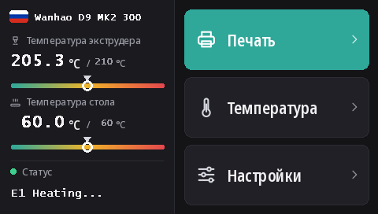

Прошивка сенсорного экрана Duplicator 9
На всех D9, от MK1 до MK3, стоит один и тот же сенсорный экран DWIN T5 (480 × 272). С этими прошивками на нём работает DGUS Reloaded 2.0, наш новый интерфейс на 16 языках, который прошивается с карты microSD.
Скачать DWIN_SET.zip (DGUS Reloaded 2.0)
Что даёт DGUS Reloaded 2.0
- 16 языков: English, Français, Deutsch, Español, Italiano, Português, Nederlands, Polski, Türkçe, Русский, العربية, हिन्दी, 中文, 日本語, 한국어, Bahasa Indonesia. Чтобы сменить язык, коснитесь флага рядом с названием принтера на главном экране; принтер запомнит выбор.
- Страница датчика филамента: Настройки → Филамент → Датчик филамента. См. Датчик филамента.
- Строка состояния не исчезает: последнее сообщение, например Ready, остаётся на экране, а не пропадает через 30 секунд.
- Шкалы температуры для сопла и стола с отметкой целевой температуры.
- Новый вид всех страниц: тёмная тема, более крупные кнопки, пиктограммы во всплывающих окнах.

1. Отформатируйте карту microSD
- Windows: Windows 11 часто отказывается форматировать в FAT32; используйте GUIFormat и задайте размер кластера (Allocation unit size) 4096.
- Linux:
sudo mkfs.fat -F 32 -s 8 /dev/sdX1(сначала проверьте устройство черезlsblk). - macOS:
sudo newfs_msdos -F 32 -c 8 /dev/diskN(проверьте черезdiskutil list).
2. Скопируйте файлы
Распакуйте DWIN_SET.zip и скопируйте всю папку DWIN_SET в корень карты.
3. Прошейте
- Выключите принтер и отключите его от сети.
- Откройте переднюю часть основания, чтобы добраться до задней стороны экрана, где находится его слот microSD.
- Вставьте карту и включите принтер. Через 10–30 секунд на экране появится процесс обновления; дождитесь, пока экран перезапустится в обычном режиме, всего это занимает от 1 до 3 минут.
- Выключите принтер, извлеките карту, закройте основание.
На видео Wanhao об обновлении экрана D9 видно, где находится слот.
Откуда он взялся
DGUS Reloaded 2.0 — это страница за страницей перерисованный DGUS Reloaded 1.0.3 (автор Desuuuu, затем Neo2003). Исходники, программа, которая генерирует файлы экрана, и переводы лежат на GitHub. Нашли неправильное или неудачное слово в своём языке? Напишите нам в Discord или откройте issue там.
Чтобы вернуться на DGUS Reloaded 1.0.3, например с прошивкой старее v2.0.9, прошейте DWIN_SET_1.0.3.zip тем же способом.
Возврат на экран Wanhao
Прошивка экрана Wanhao работает только с прошивкой материнской платы Wanhao. MK1: файл экрана соответствующей версии на странице MK1. MK1 + кит, MK2 и MK3: DWIN_SET_MK2.zip. Порядок действий тот же.